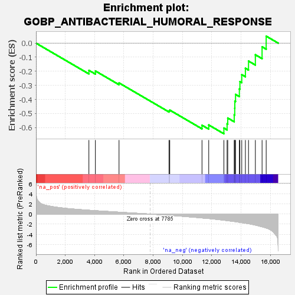
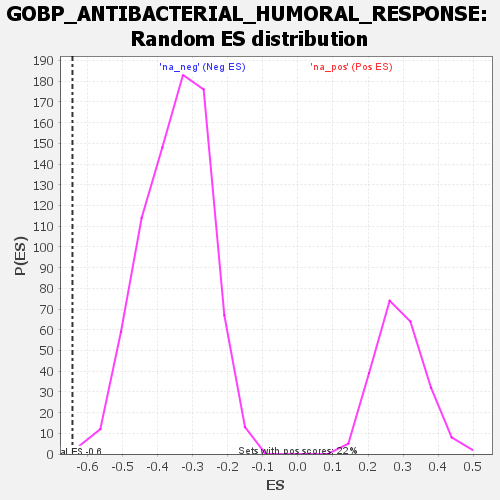

| | | Dataset | all_genes |
| Phenotype | NoPhenotypeAvailable |
| Upregulated in class | na_neg |
| GeneSet | GOBP_ANTIBACTERIAL_HUMORAL_RESPONSE |
| Enrichment Score (ES) | -0.644015 |
| Normalized Enrichment Score (NES) | -1.8432266 |
| Nominal p-value | 0.0012886598 |
| FDR q-value | 0.03960109 |
| FWER p-Value | 0.837 |
Table: GSEA Results Summary

Fig 1: Enrichment plot: GOBP_ANTIBACTERIAL_HUMORAL_RESPONSE
Profile of the Running ES Score & Positions of GeneSet Members on the Rank Ordered List
| SYMBOL | RANK IN GENE LIST | RANK METRIC SCORE | RUNNING ES | CORE ENRICHMENT | | 1 | RPL39 | 3612 | 0.758 | -0.1933 | No |
| 2 | NCR3LG1 | 4055 | 0.667 | -0.1978 | No |
| 3 | MMP7 | 5669 | 0.378 | -0.2828 | No |
| 4 | FAU | 9082 | -0.242 | -0.4813 | No |
| 5 | PI3 | 9133 | -0.253 | -0.4758 | No |
| 6 | H2BC21 | 11333 | -0.770 | -0.5832 | No |
| 7 | NOD2 | 11792 | -0.882 | -0.5814 | No |
| 8 | H2BC12 | 12827 | -1.214 | -0.6034 | Yes |
| 9 | HLA-A | 13046 | -1.293 | -0.5732 | Yes |
| 10 | RNASE4 | 13091 | -1.307 | -0.5321 | Yes |
| 11 | SLPI | 13532 | -1.469 | -0.5095 | Yes |
| 12 | TF | 13567 | -1.486 | -0.4618 | Yes |
| 13 | H2BC11 | 13574 | -1.491 | -0.4122 | Yes |
| 14 | ANG | 13623 | -1.516 | -0.3643 | Yes |
| 15 | HLA-E | 13883 | -1.622 | -0.3257 | Yes |
| 16 | H2BC10 | 13921 | -1.634 | -0.2731 | Yes |
| 17 | PLA2G6 | 14047 | -1.694 | -0.2239 | Yes |
| 18 | H2BC7 | 14296 | -1.805 | -0.1785 | Yes |
| 19 | H2BC4 | 14509 | -1.907 | -0.1274 | Yes |
| 20 | H2BC6 | 14976 | -2.181 | -0.0826 | Yes |
| 21 | H2BC8 | 15434 | -2.515 | -0.0260 | Yes |
| 22 | SPON2 | 15715 | -2.760 | 0.0495 | Yes |
Table: GSEA details [plain text format]

Fig 2: GOBP_ANTIBACTERIAL_HUMORAL_RESPONSE: Random ES distribution
Gene set null distribution of ES for GOBP_ANTIBACTERIAL_HUMORAL_RESPONSE